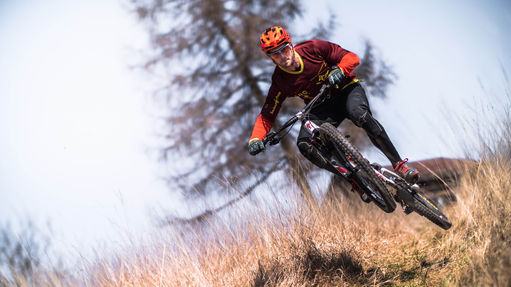
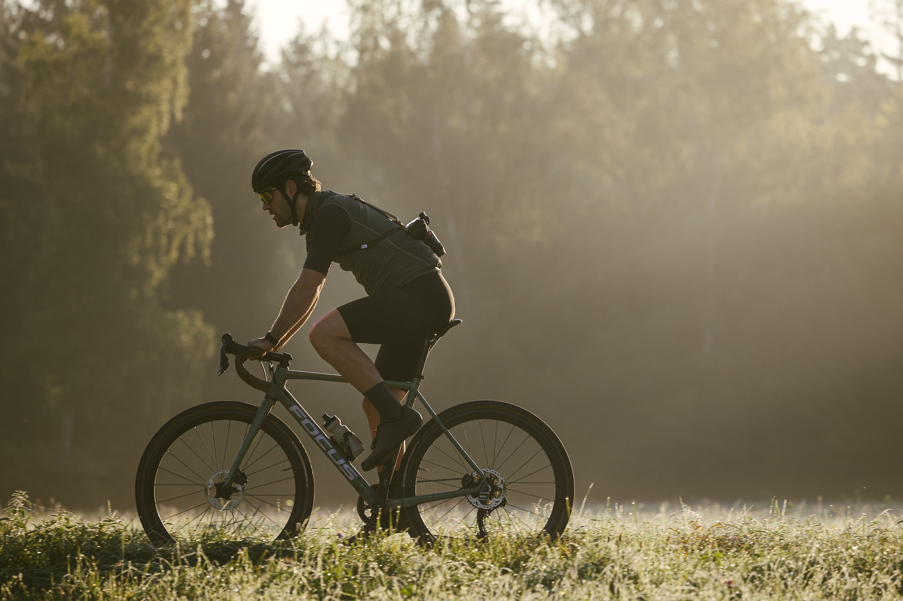

Mountain Bikes avalible for Rent
The Rocky Mountain Growler 20
The Rocky Mountsin Growler is available to rent in 5 hour sessions at $60 an hour. Rental equipment,such as helmets and padding, can be added on seperately at pickup. Please contact the shop for more details. (This is a professional mountain bike only to be used on certified trails and pathways. Any visible form of use on streets or pavement will be marked and the customer will be billed for mountain bike tires.)

Fuel EX 9.0 X01
The Fuel EX 9.0 is avalible for rent in 4 hour sessions at $90 an hour. Rental equipment, such as helmets and padding, can be added on seperately at pickup. Please contact the shop for more details.
Street Bikes avalible for Rent
Golden Cycles Shocker Fixie
The Golden Cycles Bike is available to rent in 4 hour sessions, starting at $50 an hour. Rental equipment, such as helmets and padding can be added on seperately at pickup. Please call store for more details as well as a rental form.
Marin Nasico Complete 2022
The Marin Nasico Complete 2022 is avalible to rent in 4 hour sessions, starting at $70 an hour. Rental equipment, such as helmets and padding, can be added on seperately at pickup. Please contact the shop for more details.